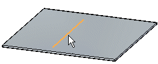
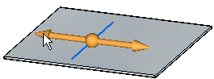
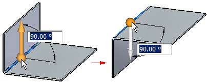
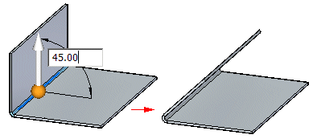
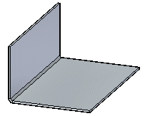

Insert a bend
In the ordered environment, you can insert a bend with the Bend command.
In the synchronous environment, you can insert a bend with the Select tool or insert a bend with the Bend command. Both workflows are explained in this topic.
Insert a bend in the ordered environment
-
Choose Home tab→Sheet Metal group→Bends list→Bend.
-
Define the profile plane.
-
Draw a profile. The profile, which must be a single linear element, represents the approximate location of the bend.
-
Choose Home tab→Close group→Close.

-
Define the bend location with respect to the profile.
-
Define which side of the part will move.
-
Define the bend direction.
-
Finish the feature.
-
You can automatically flatten the bend by setting the Flatten Bend option on the Bend Options dialog box.
Insert a bend in the synchronous environment with the Select tool
-
Choose Home tab→Select group→Select
 .
. -
Select the sketch element to create the bend.

-
Choose Home tab→Sheet Metal group→Bends list→Bend .
-
Click the side of the sketch to move.

-
(Optional) Click to the direction arrow to change the direction of the bend.

-
(Optional) Type a value to change the bend angle.

-
Click to create the bend.

Insert a bend in the synchronous environment with the Bend command
-
Choose Home tab→Sheet Metal group→Bends list→Bend .
-
Select the sketch element to create the bend.
-
Click the side of the sketch to move.
-
(Optional) Click to the direction arrow to change the direction of the bend.
-
(Optional) Type a value to change the bend angle.
-
Click to create the bend.
How do I
Edit a bend radiusApply relief to a bend bulge
Unbend a sheet metal part
Rebend a sheet metal part
Look up more details
Bend commandBend command bar
Bend Options dialog box
Bend command bar
Bend Options dialog box (editing bend radius)
Bend Bulge Relief command
Bend Bulge Relief command bar
Bulge Relief Options dialog box
Unbend command
Unbend command bar
Rebend command bar
Rebend command